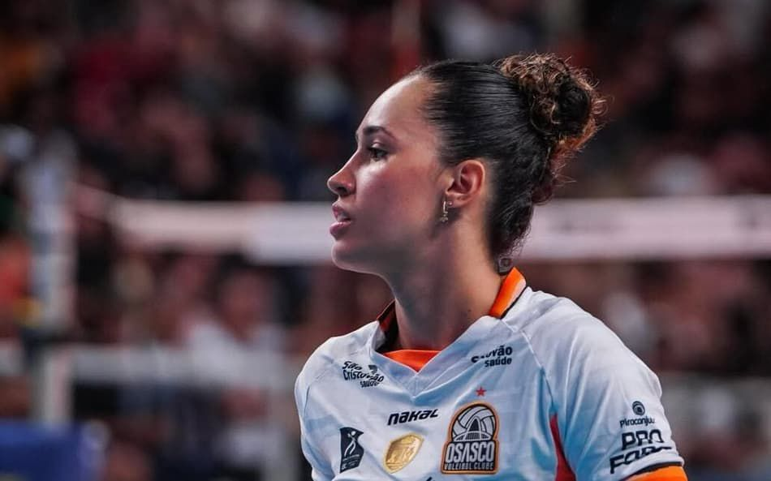
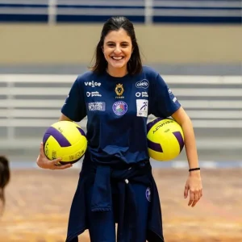

Um episódio recente ocorrido durante uma partida da Superliga Brasileira de Voleibol Feminino reacendeu discussões importantes sobre os limites da manifestação de torcedores no contexto esportivo contemporâneo. Após a derrota de sua equipe, a ponteira Maira Cipriano, atleta do Osasco São Cristóvão Saúde, relatou ter sido alvo de ofensas e ameaças provenientes das arquibancadas. O episódio gerou repercussão nas redes sociais e provocou manifestações da própria atleta sobre a forma como críticas e ataques têm extrapolado o campo da disputa esportiva.
No caso de atletas mulheres, episódios de hostilidade frequentemente não se limitam à crítica esportiva. Diversos estudos apontam que mulheres no esporte estão mais expostas a formas de violência simbólica, sexualização, desqualificação de competência e ataques dirigidos à sua identidade de gênero. Esses elementos contribuem para que a crítica ao desempenho ultrapasse os limites da análise esportiva e se converta em práticas de deslegitimação da presença feminina no esporte.
Embora manifestações emocionais façam parte da cultura do esporte, episódios dessa natureza convidam a uma reflexão mais cuidadosa sobre o modo como o erro esportivo tem sido socialmente interpretado. Quando se trata de atletas mulheres, esse processo frequentemente se articula a formas específicas de violência simbólica e deslegitimação de sua presença no esporte. Em modalidades coletivas de alto rendimento, a performance individual frequentemente se torna o ponto de condensação simbólica de frustrações coletivas. Um erro técnico, uma decisão mal executada ou um desempenho aquém do esperado passam a ser lidos não apenas como contingências do jogo, mas como falhas pessoais que supostamente justificariam a exposição pública do atleta à hostilidade.
Esse deslocamento é particularmente relevante quando observamos a maneira como a lógica do espetáculo esportivo tem se intensificado nas últimas décadas. A ampliação da cobertura midiática, a circulação instantânea de imagens e comentários nas redes sociais e a crescente mercantilização do esporte contribuem para produzir uma atmosfera de vigilância permanente sobre o desempenho dos atletas. Nesse cenário, o erro deixa de ser apenas um elemento intrínseco à imprevisibilidade da competição e passa a assumir um estatuto quase moral, no qual o desempenho é constantemente avaliado sob a lógica do acerto absoluto.
Do ponto de vista da Psicologia do Esporte, essa dinâmica cria um ambiente caracterizado por elevada pressão avaliativa. Atletas de alto rendimento já operam em contextos marcados por demandas físicas e psicológicas intensas, nas quais fatores como expectativa de resultado, responsabilidade coletiva e exposição pública compõem o cotidiano competitivo. A introdução de elementos adicionais de hostilidade não apenas amplifica o estresse situacional, como também pode interferir na percepção de segurança psicológica dentro do próprio ambiente esportivo.
A noção de segurança psicológica, amplamente discutida em diferentes contextos de desempenho humano, refere-se à percepção de que o indivíduo pode atuar em determinado ambiente sem receio de humilhação, punição desproporcional ou agressão interpessoal. No esporte, essa condição é particularmente relevante porque o processo de desempenho competitivo envolve inevitavelmente a possibilidade de erro. Quando o ambiente se torna punitivo em relação às falhas, cria-se um contexto no qual o medo de errar passa a ocupar um lugar central na experiência do atleta.
Esse fenômeno pode ter implicações diretas sobre processos psicológicos fundamentais para o rendimento esportivo. A literatura aponta que estados de ansiedade competitiva exacerbada, hipervigilância em relação à avaliação externa e dificuldades na regulação emocional podem emergir em ambientes percebidos como hostis. Paradoxalmente, quanto maior a pressão punitiva sobre o erro, maiores tendem a ser as dificuldades de desempenho, uma vez que a atenção do atleta se desloca da execução da tarefa para a antecipação de possíveis consequências negativas.
Além disso, episódios como o relatado por Maira revelam transformações mais amplas na relação entre torcedores e atletas. Historicamente, a figura do torcedor esteve associada a uma identificação emocional intensa com a equipe, marcada por sentimentos de pertencimento, orgulho coletivo e compartilhamento simbólico das vitórias e derrotas. No entanto, observa-se, em alguns contextos contemporâneos, uma transição para formas de relação mais individualizadas e instrumentalizadas, nas quais o atleta passa a ser percebido como responsável direto por corresponder às expectativas de desempenho do público.
Essa lógica tende a reduzir a complexidade do fenômeno esportivo a narrativas simplificadas de culpa e responsabilização individual. Em esportes coletivos, nos quais o resultado emerge de múltiplas interações táticas, técnicas e contextuais, a focalização de frustrações em um único atleta frequentemente ignora a natureza sistêmica da performance esportiva. Ainda assim, a visibilidade pública de determinados momentos do jogo favorece a construção de narrativas que personalizam a derrota.
A repercussão do caso envolvendo Maira também evidencia um elemento adicional característico do esporte contemporâneo: a continuidade da arena competitiva para além do espaço físico do ginásio. Se, em outros momentos históricos, a manifestação de torcedores se restringia majoritariamente ao ambiente da competição, hoje ela se prolonga nas redes sociais, nos espaços digitais de comentário e nas dinâmicas de circulação de opinião pública. O resultado é a ampliação do alcance e da permanência das críticas dirigidas aos atletas.
Nesse contexto, o episódio não deve ser compreendido apenas como um evento isolado, mas como um indicativo de tensões presentes na cultura esportiva atual. A intensidade emocional que caracteriza o esporte pode produzir experiências coletivas extremamente positivas de pertencimento e engajamento. No entanto, quando essa intensidade se converte em agressividade direcionada aos indivíduos que compõem o espetáculo esportivo, emerge um paradoxo: a paixão que sustenta o esporte passa a ameaçar aqueles que o tornam possível.
Para a Psicologia do Esporte, refletir sobre episódios como esse implica reconhecer que o desempenho atlético não ocorre em um vácuo psicológico ou social. Ele é produzido em contextos específicos de interação, nos quais fatores culturais, institucionais e relacionais moldam a experiência dos atletas. A qualidade desses contextos influencia diretamente as condições sob as quais o desempenho ocorre.
O caso envolvendo Maira Cipriano, portanto, convida a uma reflexão mais ampla sobre a cultura de avaliação permanente que atravessa o esporte contemporâneo. Em um ambiente em que o desempenho é constantemente medido, comentado e julgado, torna-se cada vez mais relevante discutir quais são os limites éticos da crítica esportiva e quais condições são necessárias para preservar a dignidade e o bem-estar daqueles que atuam no cenário competitivo.
Ao trazer essa discussão à tona, a Associação Brasileira de Psicologia do Esporte reafirma a importância de compreender o esporte não apenas como um espaço de resultados, mas também como um ambiente de relações humanas complexas. Promover contextos esportivos mais respeitosos e psicologicamente seguros não significa reduzir a competitividade do esporte, mas reconhecer que o desenvolvimento do esporte brasileiro passa, necessariamente, pela valorização, proteção e respeito às mulheres que o constroem diariamente dentro das quadras, campos e ginásios em condições que preservem a integridade psicológica dos atletas.
Quer participar dessa discussão?
O Grupo de Trabalho Mulheres no Esporte da Associação Brasileira de Psicologia do Esporte reúne pesquisadoras(es), profissionais e estudantes interessados em discutir os desafios enfrentados por mulheres no esporte e promover práticas esportivas mais justas, seguras e inclusivas.
Se você tem interesse em acompanhar ou participar das atividades do GT, entre em contato e venha fortalecer essa rede de diálogo e transformação no esporte.
Machado, A. A. (1998). Interferência da torcida na ansiedade e agressividade de atletas adolescentes. Universidade Estadual Paulista (Unesp).
Rice, S. M., Purcell, R., De Silva, S., Mawren, D., McGorry, P. D., & Parker, A. G. (2016). The Mental Health of Elite Athletes: A Narrative Systematic Review. Sports medicine (Auckland, N.Z.), 46(9), 1333–1353.
Wann, Daniel & Branscombe, Nyla. (1970). Sports fans: Measuring degree of identification with their team.. International Journal of Sport Psychology. 24. 1-17.
Sobre os autores:
Gustavo Baroni
Profissional de Educação FÍsicia (CREF: 036474/PR). Doutorando em Educação Física e graduando em Psicologia pela Universidade Estadual de Londrina. Membro da atual diretoria (2026 – 2027) da Associação Brasileira de Psicologia do Esporte (ABRAPESP).
Júlia Pimenta
Psicóloga Clínica e Esportiva (UFMG). Mestre em Cognição e Comportamento (UFMG). Especialização em Psicologia do Esporte (Unifase). Docente da Faculdade Ciências Médicas de Minas Gerais (FCMMG). Coordenadora do grupo de trabalho de Mulheres no Esporte da ABRAPESP
Nicolle Liane

Psicóloga formada pela Universidade Presbiteriana Mackenzie. Formação em Psicologia do Esporte (Curso Iniciante e Avançado em Psicologia Clínica do Esporte da Sâmia Hallage ). Associada e participante de grupo de trabalho de Mulheres no Esporte da ABRAPESP (Associação Brasileira de Psicologia do Esporte). Atuo com psicologia do esporte, com experiência com atletas de vôlei de praia, jiu-jítsu, handebol e natação, e com as equipes do Barueri Volleyball Club (sub-17, sub-19, sub-21 e adulto).